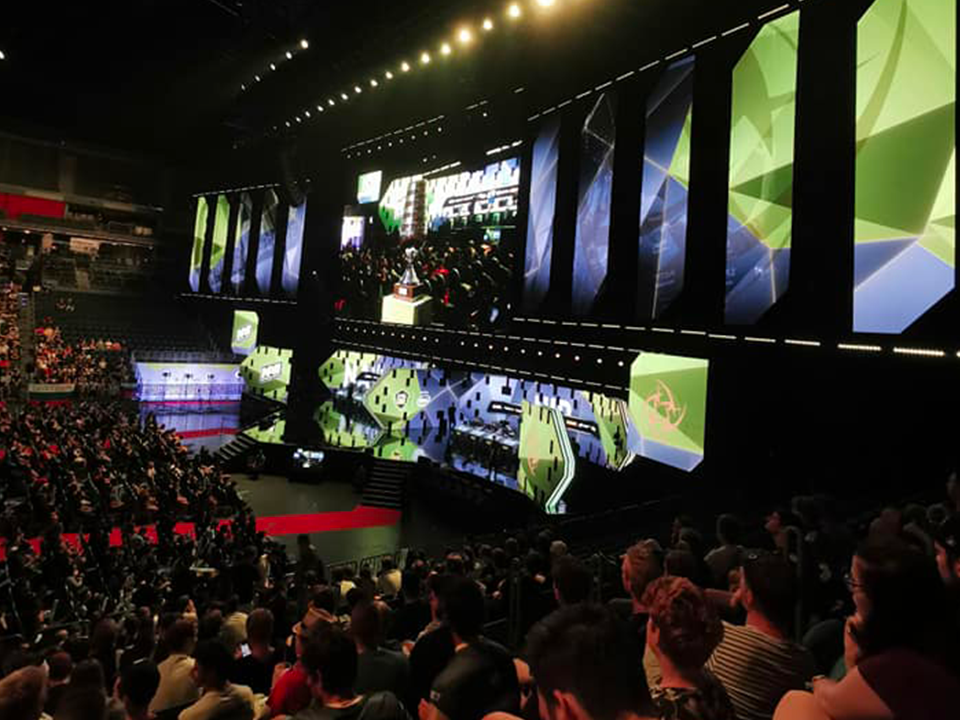
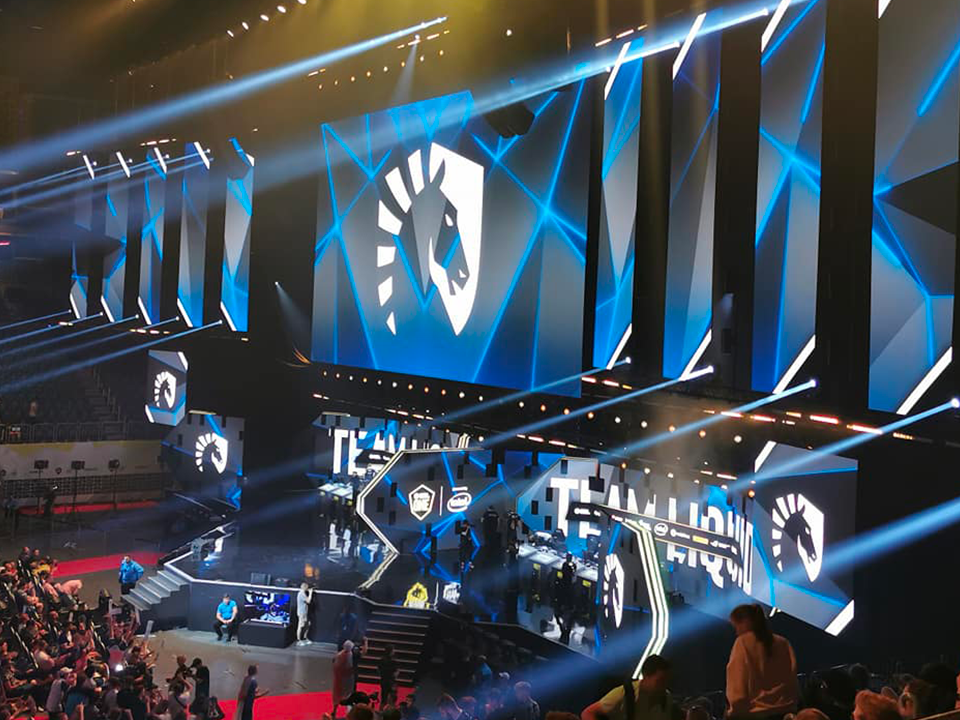

ESL ONE 2019 Cologne ▮▪
In 2019, I got an amazing opportunity to attend this huge Counter-Strike event as a guest. I owe this opportunity to Martin Polášek, and I want to send a big thank you to him in retrospect! During this tournament, I got to experience a backstage tour where I saw how everything comes together.
Where exactly did I get to take a peek? I saw a lot of production rooms — to the point where you start wondering why there’s so much equipment! An event of this scale requires countless people, and it was really nice to see how much everyone loves what they do. People who aren’t involved in gaming might just think “it’s only games,” and they often don’t understand events like this.
Gaming and esports have reached a global level, where professional players in some cases earn more than athletes, actors, and others. Another important aspect is the community and the atmosphere at these events. There are moments when I literally get goosebumps all over my body.
The entire event took place in the same city where the well-known Gamescom is held. We’ll definitely talk more about that event in the future as well. ESL ONE specifically took place at the Lanxess Arena — and it was absolutely packed! Fans were cheering their favorites on to victory. I couldn’t wait for it to start.

Seeing the best CS teams in the world compete for a total prize pool of $300,000 was an incredible experience. Personally, I’m a fan of the organization Fnatic, but I also really liked Team Liquid, who ended up winning the entire tournament and taking home a beautiful $125,000.
It was another experience I’ll remember for the rest of my life. Another badge for my collection — one I’m truly proud of. Once again, thank you, Martin, for the amazing opportunity to experience all of this.
I’m also adding some photos to this article. They were taken on a phone, so I apologize in advance for the quality — I had to download them and couldn’t find the originals.
Until next time…
Štefan
◀ Back to blog